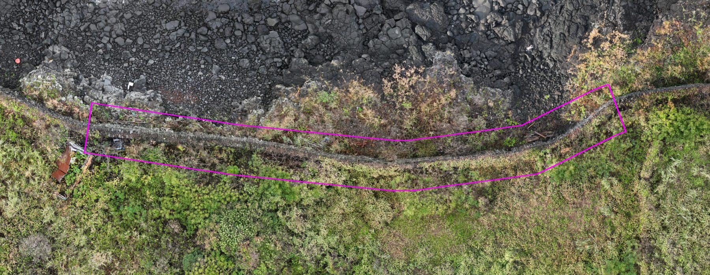
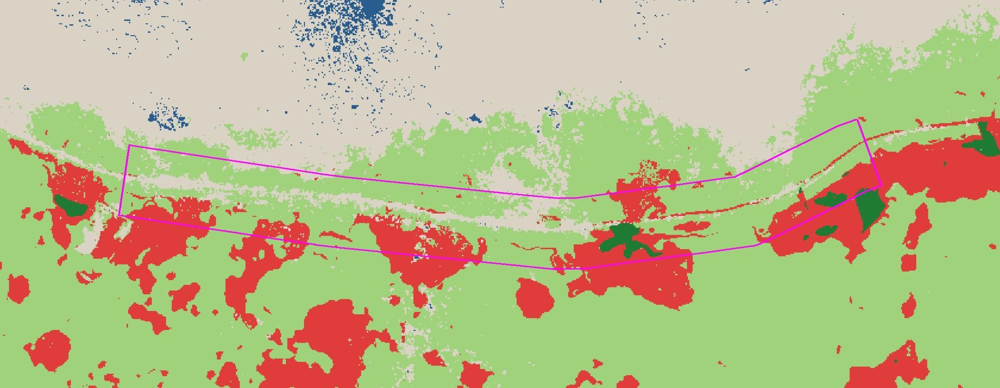
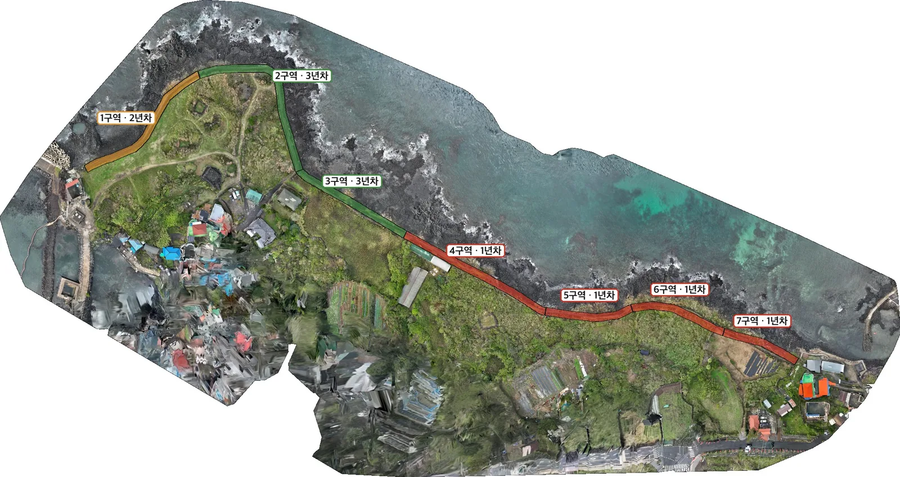
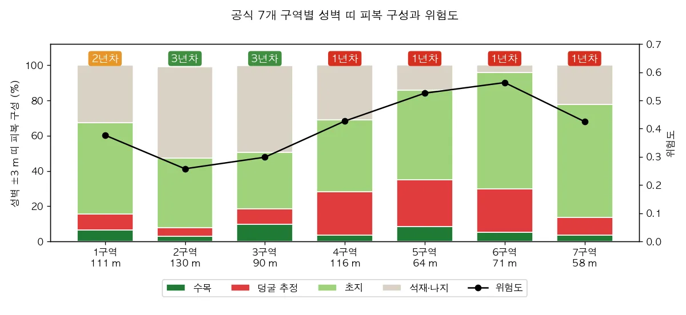
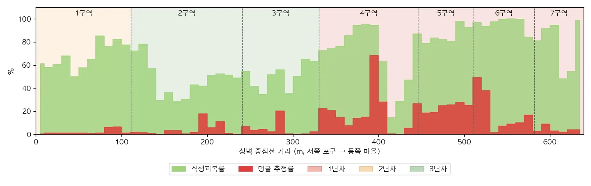

NDVI
(근적외 − 적색) ÷ (근적외 + 적색)
가장 널리 쓰는 기본 지수입니다. 잎이 얼마나 많고 살아 있는지를 봅니다. 값은 −1~1이고, 맨땅은 0 언저리, 우거진 숲은 0.8 위입니다.
이번 분석의 식생 판정 기준 — NDVI 0.30 이상이면 식물, 0.45 이상이고 높이가 0.2~2 m면 덩굴로 추정
제주 화북 · 별도환해장성 · 2026-10-12 촬영
바닷가에 쌓은 돌벽을 덩굴이 얼마나 덮었는지 재려고 날았습니다. 한 번의 비행으로 정사영상 · 3D 메시 · 가우시안 스플래팅 · 식생 분석을 함께 만들었고, 아래 작업창에서 직접 돌려 보고 재 보실 수 있습니다.
왜 찍었나
환해장성은 바닷가에 돌을 쌓아 올린 성벽입니다. 시멘트 없이 돌과 돌을 맞물려 쌓았기 때문에, 덩굴과 관목이 돌 틈에 뿌리를 내리고 줄기가 굵어지면 돌이 밀려나고 결국 무너집니다. 그래서 이번 촬영의 목적은 하나입니다 — 성벽을 식물이 얼마나 덮었는지 재는 것. 사람 눈으로는 이끼 낀 돌과 마른 덩굴이 비슷해 보이지만, 근적외선으로 보면 살아 있는 식물만 환하게 드러납니다.


측정을 켜고 모델 표면을 차례로 클릭하세요. 직선 거리, 누적 거리, 높이 차를 계산합니다.
사진 1,651장으로 3D 메시를 만들고, 30만 면 웹용으로 단순화 · 4K 텍스처. 단위는 m입니다(GPS로 축척 고정).
수십만 개의 반투명 타원체로 장면을 표현합니다. 메시가 뭉개는 풀잎, 파도 거품, 돌 틈의 질감까지 사진처럼 보여 줍니다.
가우시안 스플래팅으로 복원했습니다. superspl.at에는 잡티를 걸러 낸 150만 스플랫을, 내장 뷰어에는 중요도 상위 45만 스플랫을 실었습니다.
멀티스펙트럴이란
사람 눈은 빨강·초록·파랑 세 가지 빛만 봅니다. 이 드론은 거기에 레드에지와 근적외를 더해 다섯 가지 빛으로 같은 장면을 동시에 찍습니다. 살아 있는 잎은 빨간빛은 빨아들이고(광합성에 씁니다) 근적외는 거울처럼 되쏩니다. 돌과 흙은 어느 빛이든 비슷하게 반사합니다. 이 차이가 크면 식물, 작으면 돌 — 그 차이를 숫자로 만든 것이 식생지수입니다.
가장 널리 쓰는 기본 지수입니다. 잎이 얼마나 많고 살아 있는지를 봅니다. 값은 −1~1이고, 맨땅은 0 언저리, 우거진 숲은 0.8 위입니다.
적색 대신 레드에지를 씁니다. 적색은 잎이 조금만 겹쳐도 다 빨려 더 이상 변하지 않는데(포화), 레드에지는 그 안에서도 차이가 남습니다. 우거진 곳의 활력 차이를 봅니다.
적색 대신 녹색을 씁니다. 녹색은 엽록소 양에 민감해서 잎의 푸름(엽록소 함량)을 더 잘 드러냅니다.
※ 보정판(반사율 기준 패널) 없이 처리해 절대 반사율은 낮게 나옵니다. 그래서 반사율 자체가 아니라 비율로 만든 지수만 씁니다. 식생·덩굴 기준값은 현장 확인 전의 임시값입니다.
처리 공정
분석 요약
공식 7개 관리구역별로 성벽 중심선 ±3 m 띠의 식생을 쟀습니다.
위험도(식생 0.5 + 덩굴 추정 0.3 + 수목 0.2)가 높은 구역부터 1·2·3년차로 나눴습니다. 덩굴이 굵어져 돌을 벌리기 전에 3년 주기로 제거하는 관리안입니다.
성벽 위 식물 높이는 성벽 윗면을 기준으로 잽니다(2026-10-28 보정). 이 성벽은 나무가 거의 없어 수목 항은 0에 가깝습니다. 1구역과 7구역의 연차는 점수 차가 작아 현장 확인으로 최종 정합니다.
| 구역 | 식생 | 덩굴 | 위험도 | 배분 |
|---|---|---|---|---|
| 6 | 95.7% | 18.0% | 0.535 | 1년차 |
| 5 | 85.8% | 23.4% | 0.504 | 1년차 |
| 4 | 69.1% | 18.7% | 0.402 | 1년차 |
| 7 | 77.6% | 4.2% | 0.401 | 1년차 |
| 1 | 67.4% | 2.0% | 0.343 | 2년차 |
| 3 | 50.6% | 4.5% | 0.267 | 3년차 |
| 2 | 47.4% | 3.8% | 0.248 | 3년차 |
공식 7개 관리구역을 위험도순으로 정렬했습니다. 성벽 중심선 ±3 m 띠 기준입니다.
산출물
RGB 1.5 cm, 멀티스펙트럴 2.1 cm GeoTIFF, EPSG:32652
500만 면 OBJ(8K 텍스처), 웹용 30만·80만 면 GLB
원본 PLY와 웹용 경량 .splat
RGB 1.8 GB, 멀티스펙트럴 0.7 GB LAZ
NDVI·NDRE·GNDVI, 식생 높이, 분류도, 구간별 통계 CSV
QGIS 프로젝트(레이어 14개, 성벽 중심선 디지타이징 레이어 포함)
드론 식생 분석
눈으로 보면 돌벽입니다. 그런데 근적외선으로 다시 보면 성벽 대부분이 이미 풀과 덩굴에 덮여 있습니다. 그래서 어디부터 정비할지를 느낌이 아니라 데이터로 정했습니다.
성벽 중심선 639 m를 따라 양옆 3 m 띠를 분석해, 공식 7개 관리구역을 1 · 2 · 3년차로 나눴습니다. 아래 단추를 차례로 눌러 보시면 어떻게 나왔는지 보실 수 있습니다.
드론 사진(RGB)으로 보면 돌담과 풀이 섞여 있어, 어디가 얼마나 덮였는지 눈으로는 알기 어렵습니다.
단추를 눌러 같은 자리를 네 가지로 바꿔 보실 수 있습니다. 네 장은 범위와 크기가 같아 정확히 겹칩니다.
드론 사진(RGB)으로 보면 돌담과 풀이 섞여 있어, 어디가 얼마나 덮였는지 눈으로는 알기 어렵습니다.
1년차로 묶인 구간입니다. 빨강이 덩굴 추정입니다.
연차 배분

| 연차 | 구역 | 성벽 길이 | 식생 | 덩굴 추정 |
|---|---|---|---|---|
| 1년차 | 4 ~ 7구역 | 309 m | 80.3% | 16.8% |
| 2년차 | 1구역 · 포구 쪽 서측 성벽 | 111 m | 67.4% | 2.0% |
| 3년차 | 2 · 3구역 | 220 m | 48.7% | 4.1% |
같은 연차는 서로 붙어 있는 구역끼리 묶어, 인원이 한 곳에서 이어서 작업할 수 있게 했습니다. 해마다 상 · 하반기에 같은 방식으로 촬영하면 정비 전후 변화를 같은 기준으로 비교할 수 있습니다.


구역별로 보기
구역을 고르고, 가운데 선을 좌우로 끌어 일반 사진과 분류 결과를 견줘 보세요.
분홍 테두리는 분석 범위(성벽 중심선 ±3 m)입니다. 구역 경계는 돌봄사업단 구역도에서 옮긴 것이라 현장 표지와 몇 m 다를 수 있습니다.
석축 판정
성벽은 "주변보다 일정한 높이로, 일정한 폭으로, 길게 이어져 쌓여 있다"는 점으로 구별됩니다. 이 말을 수치 조건으로 바꿔야 자동으로 가려낼 수 있습니다. 아래 값은 성벽 639 m, 7개 구역 전체의 드론 표면모형에서 직접 뽑았습니다.
| 항목 | 값 | 어떻게 정했나 |
|---|---|---|
| 거시 지형 제거 | 국소기복모형(LRM) | 표면모형에서 완만한 지형을 빼고 국소 돌출만 남긴다 |
| 필터 반경 | 3 m (5 cm 격자 60칸) | 상부 폭(약 1.2 m)의 2~3배. 0.5~7.5 m를 비교해 성벽과 주변이 가장 잘 갈리면서 오검출이 적은 값 |
| 돌출 높이 | 0.5 m 이상 | 성벽 꼭대기의 90%가 0.76 m 넘게 솟았고, 성벽 3 m 밖 지면은 99%가 0.85 m 아래. 두 분포가 갈리는 지점 |
| 연속 길이 | 10 m 이상 | 해안 암반 덩이·돌무더기를 떨어낸다. 5 m로 두면 성벽 밖 오검출이 약 3배 |
| 상부 폭 (참고) | 중앙값 1.15 m (중간 50%: 0.95~1.45 m) | 성벽 0.5 m 간격 1,279개 단면에서 꼭대기 15 cm 안쪽 폭 |
| 식생 | 떼어내지 않고 겹쳐 본다 | 먼저 떼어내면 덮인 성벽까지 지워져 검출률이 14%로 떨어진다 |
이 숫자들은 문헌값이 아니라 우리 측정분에서 만든 값입니다. 지역마다 축조 양식이 달라 전역 임계값을 정한 문헌이 사실상 없습니다. 이 조건으로 성벽 단면의 97%를 찾았고, 성벽에서 3 m 넘게 떨어진 곳을 성벽으로 잘못 고른 면적은 약 60 m²였습니다.
성벽 꼭대기의 절반 이상이 풀과 덩굴에 덮여 있습니다. 식물을 지우고 빈 자리를 양옆으로 이어 메우면 성벽이 낮아집니다. 우리 측정분에서 덮인 폭이 2 m를 넘는 곳은 꼭대기가 중앙값 약 20 cm, 5 m를 넘는 곳은 약 50 cm 낮아졌고, 일부는 성벽이 통째로 사라졌습니다. 그래서 위 판정은 식물을 지우지 않은 표면모형에서 합니다. 대신 덮인 구간의 높이는 식물 윗면까지 잰 값이라 실제 돌보다 높게 나올 수 있습니다. 어느 쪽이든 덮인 구간의 실제 돌 높이와 체적은 공중 사진만으로는 알 수 없습니다.
그런 구간은 지상 라이다로 따로 재어 보완합니다. 공중에서 보이지 않는 옆면을 지상에서 재어 같은 좌표계로 합칩니다. 덩굴이 빽빽한 곳은 라이다도 돌을 보지 못하므로 정비로 걷어낸 뒤 다시 잽니다.